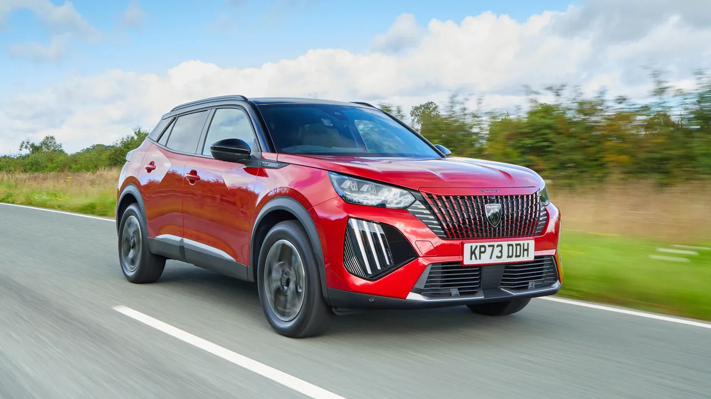
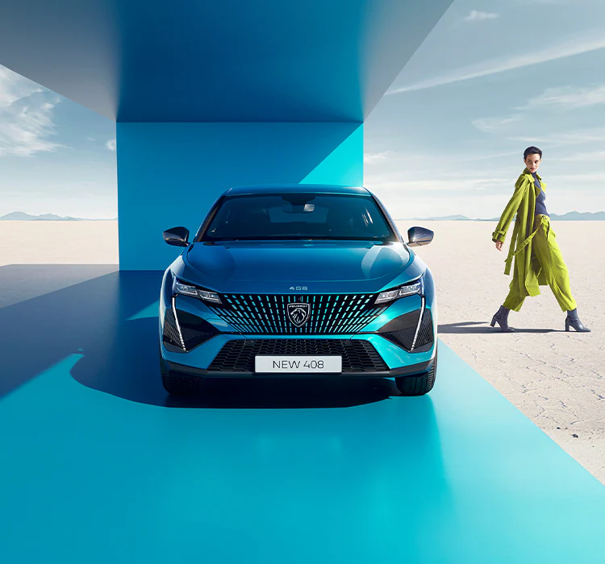
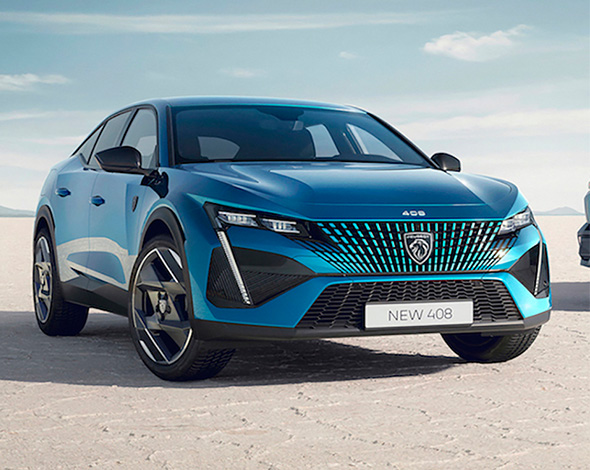

Peugeot


Introduction

The family business that preceded the current Peugeot companies was established in 1810, making it the oldest car company in the world.
On 20 November 1858, Emile Peugeot applied for the lion trademark.
Armand Peugeot (1849 until 1915) built the company's first vehicle, a steam-powered tricycle.
In 1886, the company collaborated with Leon Serpollet, followed by the development of an internal combustion car in 1890, which used a Panhard-Daimler engine.
The Peugeot family and company are originally from Sochaux, where Peugeot still operates a large manufacturing facility and the Peugeot Museum.
Pre-launch concept cars

Peugeot still plans on developing new models to compete in segments where it currently does not compete.
Collin said that the French automaker competed in 72% of market segments in 2007, but he wanted to get that figure up to 90%.
Despite Peugeot's sportscar racing program, the company is not prepared to build a pure sportscar any more hardcore than the RC Z sports-coupe.
It is also pursuing government funding to develop a diesel-hybrid drivetrain, which might be key to its expansion.